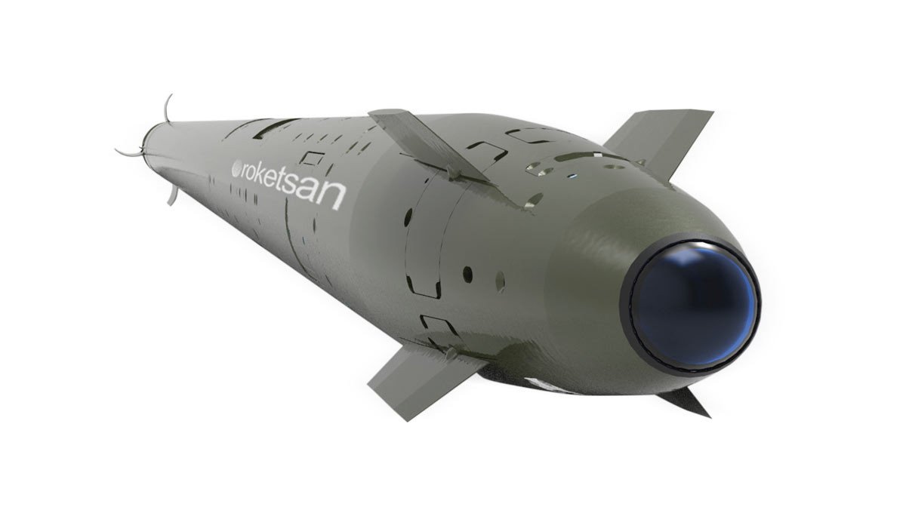
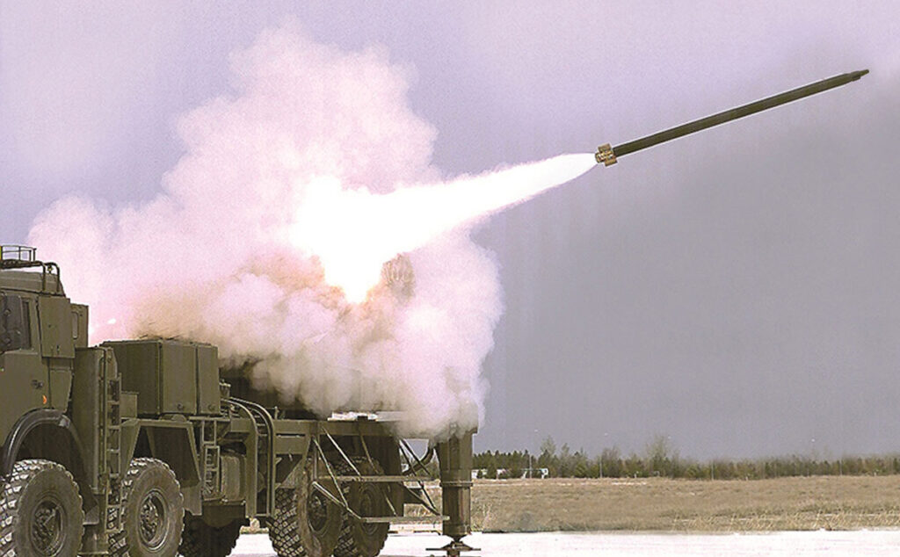

122 mm Lazer Güdümlü Roket
TRLG-122, 122 mm sınıfındaki çok namlulu roketatar sistemlerinden atılabilen, lazer güdüm kabiliyeti kazanmış hassas roket mühimmatıdır. Özellikle yüksek öncelikli hedeflere karşı hassas ve etkili ateş gücü sağlamak amacıyla geliştirilmiştir.
Sistem, klasik 122 mm roket altyapısını korurken terminal safhada lazer arayıcı başlıkla hedefe yönelerek nokta vuruş kabiliyeti sunar. Bu sayede sabit hedeflerin yanı sıra lazerle işaretlenebilen hassas hedeflere karşı da etkili hale gelir.
TRLG-122; ileri gözetleyici unsurlar, kara birlikleri veya hava platformları tarafından işaretlenen hedeflere karşı kullanılabilecek yapıda olup, düşük istenmeyen etki ve yüksek doğruluk gerektiren görevlerde önemli bir çözüm sunar.
13–30 km
8–28 km
122 mm
76–78 kg
3.3 m
≤ 2 m CEP
| Mühimmat Tipi | 122 mm lazer güdümlü roket |
| Adı | TRLG-122 |
| Görev Alanı | Yüksek öncelikli hedeflere hassas ve etkili ateş desteği |
| Çap | 122 mm |
| Uzunluk | 3.3 m |
| Füze Ağırlığı | 76 kg (ürün sayfası) / 78 kg (2024 katalog) |
| Menzil | 13–30 km (ürün sayfası) / 8–28 km (2024 katalog) |
| Güdüm | ANS + LAB (Ataletsel Navigasyon Sistemi + Lazer Arayıcı Başlık) |
| Lazer Uyumu | Stanag 3733 uyumlu lazer arayıcı başlık |
| Güdüm Mantığı | Ataletsel güdümle hedef bölgesine yaklaşma, terminal fazda lazer arayıcıyla nokta vuruş |
| Kontrol | Elektromekanik tahrik sistemli aerodinamik kontrol |
| Yakıt Tipi | Kompozit katı yakıt |
| Harp Başlığı Tipi | Tahrip + çelik bilyeli |
| Harp Başlığı Ağırlığı | 13.5 kg |
| Harp Başlığı Etki Yarıçapı | ≥ 40 m |
| Tapa Tipi | Çarpma ve yaklaşmalı |
| Raf Ömrü | 10 yıl |
| Vuruş Hassasiyeti | ≤ 2 m CEP |
| Atış Platformu | 122 mm çok namlulu roketatar sistemleri |
| Sistem Yapısı | Taşıma, depolama ve atış için pod yapısı |
| Öne Çıkan Özellik | 122 mm roket sınıfında, lazer işaretli hedeflere santimetre düzeyinde hassasiyet yaklaşımı sunan yerli çözüm |
| Atışa Hazırlık | Kısa sürede atışa hazır hale gelebilme |
| Doğruluk | Pin-point accuracy / nokta hassasiyetinde vuruş |
| İstenmeyen Etki | Düşük collateral damage yaklaşımı |
| Hassas Taarruz | Precision strike capability |
| Hedef İşaretleme | Yerden veya havadan lazer işaretleme ile hedef angajmanı |
| Görev Koşulları | Gece/gündüz ve farklı arazi koşullarında kullanıma uygun operasyon konsepti |
| Kullanım Alanı | Zaman kritik ve hassas vurulması gereken hedefler |
| Hareketli Hedefler | Lazerle işaretlenebilen hareketli hedefler |
| Zırhlı / Hafif Zırhlı Araçlar | Hassas vuruş gerektiren kara hedefleri |
| Radar ve Sensörler | Radar mevzileri ve sensör sistemleri |
| Komuta Merkezleri | Kritik komuta-kontrol unsurları |
| Fırsat Hedefleri | Görev sırasında lazerle işaretlenebilen anlık hedefler |

